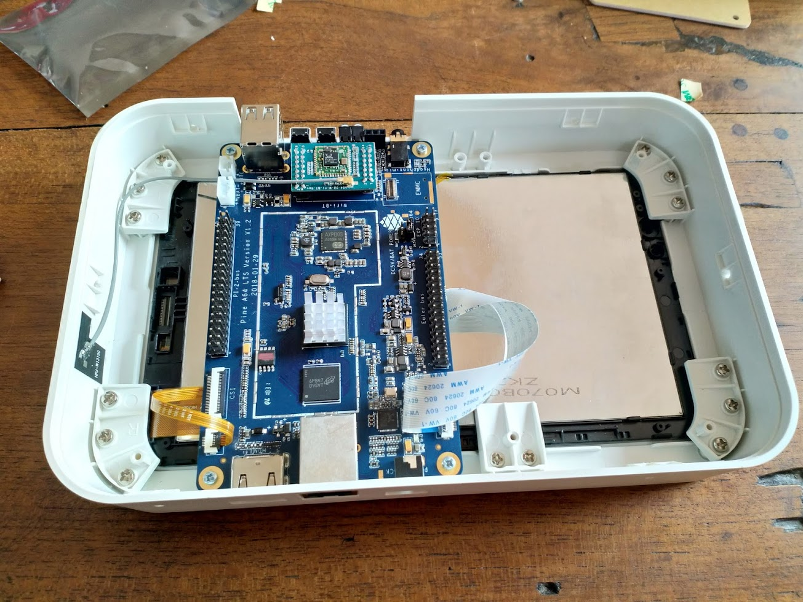

PINE64 A64-LTS (pine64-a64lts)
Jump to navigation
Jump to search
|
 PINE A64-LTS in a playbox enclosure | |
| Manufacturer | PINE64 |
|---|---|
| Name | A64-LTS |
| Codename | pine64-a64lts |
| Released | 2017 |
| Category | testing |
| Original software | Linux 3.10 |
| Hardware | |
| Chipset | Allwinner A64 |
| CPU | 4x 1152 MHz Cortex-A53 |
| GPU | Mali-400 MP2 |
| Memory | 2 GB |
| Architecture | aarch64 |
| Unixbench Whet/Dhry score | 885.5 |
{kind=link}
| USB Networking | |
|---|---|
| Flashing |
Unavailable
|
| Touchscreen | |
| Display | |
| WiFi | |
| FDE | |
| Mainline |
Works
|
| Battery | |
| 3D Acceleration | |
| Audio |
Works
|
| Bluetooth | |
| Camera | |
| GPS |
Unavailable
|
| Mobile data |
Unavailable
|
| SMS |
Unavailable
|
| Calls |
Unavailable
|
| USB OTG | |
| NFC | |
| Accelerometer |
Unavailable
|
|---|---|
| Magnetometer | |
| Ambient Light | |
| Proximity | |
| Hall Effect | |
| Barometer | |
| Power Sensor | |
| Camera Flash | |
|---|---|
| Keyboard | |
| Touchpad | |
| USB-A | |
| HDMI/DP | |
| Ir TX | |
| Ir RX | |
| Stylus | |
| Haptics | |
| Ethernet | |
| FOSS bootloader | |
Contributors
- MartijnBraam
- Luca Weiss (z3ntu)
Serial console
The Pine board has a 3.3v UART on the EXP 10-pin header.
- Pin 6 is GND
- Pin 7 is TX
- Pin 8 is RX
Headphone jack
Install alsa-utils with apk, launch alsamixer, unmute (press M) "Headphone", "AIF1 Slot 0 Digi" and "DAC" (or "DAC Reversed"), increase the volume of "Headphone" to something over zero.
Then you can play some music (e.g. a .wav file) with aplay.
See also
- pmaports!6 Initial merge request
- Device package
- Tools for FEL mode
- pine64's own wiki page
- Patch for u-boot for board support